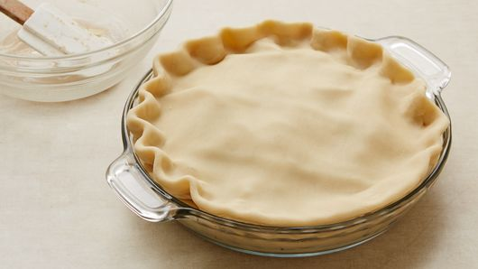
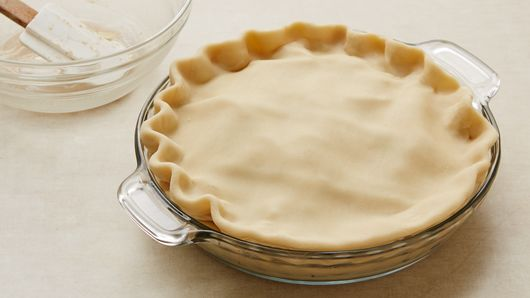

inspiration: pillsbury
 

step 1:Heat oven to 425°F. Place 1 pie crust in ungreased 9-inch glass pie plate. Press firmly against side and bottom.
step 2: In large bowl, gently mix filling ingredients; spoon into crust-lined pie plate. Top with second crust. Wrap excess top crust under bottom crust edge, pressing edges together to seal; flute. Cut slits or shapes in several places in top crust.
step 3: Bake 40 to 45 minutes or until apples are tender and crust is golden brown. Cover edge of crust with 2- to 3-inch wide strips of foil after first 15 to 20 minutes of baking to prevent excessive browning. Cool on cooling rack at least 2 hours before serving.
nutrition info: 230 Calories, 6g Total Fat, 1g Protein, 43g Total Carbohydrate, 27g Sugars
source https://www.kurashiru.com/recipes/5b427131-be20-4326-b0d2-8bb574e8b14eI really like how compact this website is. It is able to display the ingredients list and instructions in one page which makes it alot easier to cook since you dont have to scroll with dirty hands. I like how there are reviews and posts that people have made for this recipe which is very useful when choosing between recipes.
https://www.bonappetit.com/recipe/creamy-pasta-with-crispy-mushroomsI think this recipe website is beautiful with its simple layout. It even shows you what tools you need. This website is able to use sections and headers very well. The only downside is the paywall
https://www.liquor.com/recipes/bourbon-old-fashioned/I think this recipe page is nice because it dives into the history of a cocktail. I like how the font selection and colors are able to create a vibe. I also highly prefer recipe sites with videos.
https://www.discoveroutpost.com/I really like the parallax effect of this website. One thing that I do not like is the mouse effect for the "play reel". I think not being able to see the mouse while having a delay is a big nono.
https://www.dffrntera.com/This site is able to use 3d assets really efficiently as it flows really smooth and has very little lag. It would be cool to have a 3d asset of ingredients being combined as the user scrolls through a site. It would be a developers nightmare though.
https://www.moooi.com/us/a-life-extraordinaryI think this website has some pretty sick effects. Its definitely cool the first time but the second time, the lag starts becoming noticeable and getting to the page you want to is a process. I think this would be a warning that adding too many effects can ruin Ux
https://rainforest.arkivert.no/#kartI like how this website is able to tell a story. The VR experience really puts you in a whole different world.